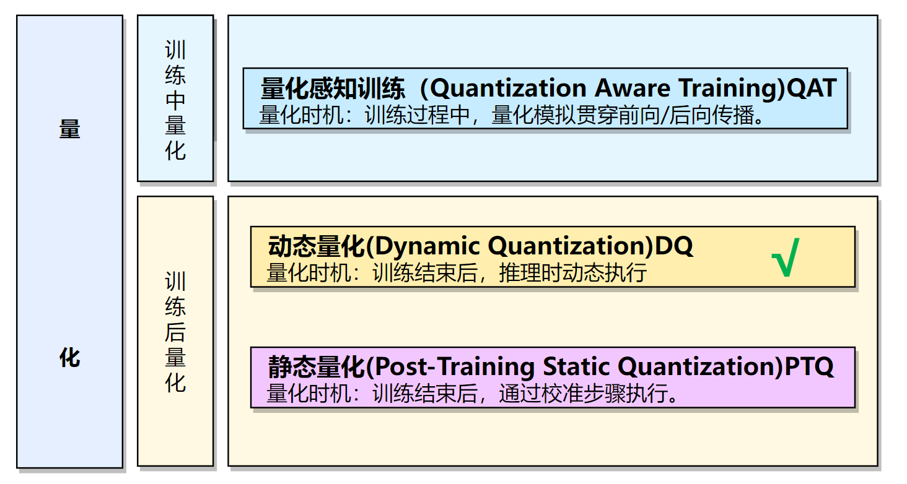
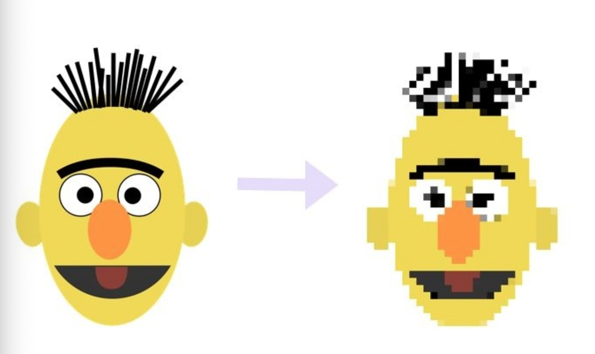
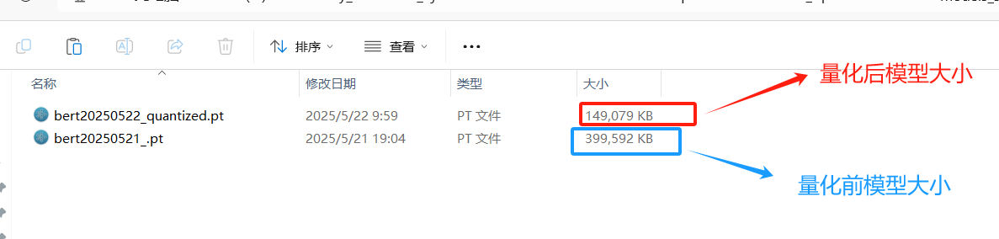
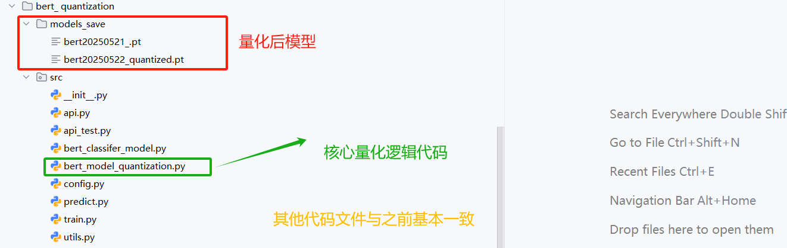

4.2 模型量化¶
学习目标：
1.知道什么是量化？
2.能够利用pytorch完成模型量化
1. 什么是模型的量化¶
量化是一种技术，通过使用低精度数据类型（如 8 位整数 （int8））而不是通常的 32 位浮点 （float32））来表示权重和激活，从而降低运行推理的计算和内存成本。减少位数意味着生成的模型需要更少的内存存储，并且使用整数运算可以更快地执行矩阵乘法等运算。它还允许在嵌入式设备或者边缘设备上运行模型，这些设备有时仅支持整数数据类型。将float32量化为int8会实现性能提升：
- 模型尺寸缩小 4 倍；
- 内存带宽减少 2-4 倍；
- 推理速度提高了 2-4 倍（确切的加速取决于硬件、网络和模型等）。
量化背后的基本思想非常简单：从权重和激活的高精度表示（通常是常规的 32 位浮点）到较低精度的数据类型。最常见的低精度数据类型是：
| 数据类型 (Data Type) | 累积数据类型 (Accumulation Data Type) | 值域 (Range) | 说明 |
|---|---|---|---|
| float16 | float16 | ±6.55×10⁴（约±65504） | 半精度浮点数，占用16位，精度低，范围有限。 |
| bfloat16 | float32 | ±3.39×10³⁸（近似float32范围） | 脑浮点数，16位，指数范围与float32相同，精度较低。 |
| int16 | int32 | -32768 到 32767 | 16位有符号整数，适合整数运算，无小数。 |
| int8 | int32 | -128 到 127 | 8位有符号整数，范围小，适合低精度整数运算。 |
量化：将数据转换为较低精度，如 INT8。量化意味着引入近似值，由此产生的网络精度略低。
“累积数据类型”（Accumulation Data Type）是指在进行多次数值运算（尤其是加法或乘法累积）时，用于存储中间结果和最终结果的数据类型。它通常比原始数据类型（如float16、bfloat16、int8、int16）有更高的精度或更大的范围，以避免精度丢失或数值溢出。
通俗比喻：
- 想象你在用计算器做很多次加法，输入的数字可能是小数（像0.001），但计算器内部会用更高精度的数字来保存中间结果，防止小数被四舍五入丢失。
- 累积数据类型就像这个“更高精度的计算器”，确保多次运算后结果仍然准确。
2.量化三种方式¶
实际部署的时候需要一些模型加速的方法，每种框架除了fp32精度外，都支持了int8的精度，而量化到int8常常可以使我们的模型更小更快，所以在部署端很受欢迎。常用的模型量化方式有动态量化、训练中量化，QAT,和训练后量化，PTQ。

-
通俗的理解, 就是将模型的参数精度进行降低操作, 用更少的比特位(torch.qint8)代替较多的比特位(torch.float32), 从而缩减模型, 并加速推断速度.
-
如下图所示, 左侧的是原始模型拥有更高的参数精度(float32), 等效于像素高, 看的清晰; 右侧的是量化后的模型, 拥有较低的参数精度(int8), 等效于像素低, 看的模糊, 但依然可以准确的识别图像内容.本次实现训练后的动态量化。

2.Pytorch的量化¶
本次直接使用Pytorch的动态量化(Dynamic Quantization)，即torch.quantization.quantize_dynamic()来实现量化操作即可,量化需要在cpu中完成，所以需要把设备信息设置为cpu.以下是量化前后的模型大小对比：

3.代码实现¶
代码位置：
TMFCode\06-model-compression\bert_ quantization

核心逻辑：
整个量化代码，核心是增加了bert_model_quantization.py文件以及配置文件微调。
该脚本实现了对已经训练好的 模型进行，通过了torch.quantization.quantize_dynamic()进行了量化。
后续并基于量化得到的模型进行了部署以及推理延时测试。
3.1 配置类文件中的Config类¶
代码位置：
TMFCode\06-model-compression\bert_ quantization\src\config.py
核心增加了量化模型存储路径以及量化device设置为cpu:
import torch
import os
import datetime
from transformers.models import BertModel,BertTokenizer,BertConfig
current_date=datetime.datetime.now().date().strftime("%Y%m%d")
class Config(object):
def __init__(self):
"""
配置类，包含模型和训练所需的各种参数。
"""
self.model_name = "bert" # 模型名称
self.data_path = r"C:\Lucky_dt\2_bj\TMFCode\01-data" #数据集的根路径
self.train_path = self.data_path + "\\train.txt" # 训练集
self.dev_path = self.data_path + "\\dev3.txt" # 少量验证集，快速验证
# self.dev_path = self.data_path + "\\dev.txt" # 全量验证集
self.test_path = self.data_path + "\\test.txt" # 测试集
self.class_list = [x.strip() for x in open(self.data_path + "\\class.txt").readlines()] # 类别名单
self.model_save_path = r"C:\Lucky_dt\2_bj\TMFCode\04-bert\save_models\bert20250521_.pt" # 模型训练结果
self.save_model_path2 = r"C:\Lucky_dt\2_bj\TMFCode\06-model-compression\bert_ quantization\models_save" # 量化模型存储结果路径
if not os.path.exists(self.save_model_path2):
os.mkdir(self.save_model_path2)
self.save_model_path2 += "\\" + self.model_name + current_date+"_quantized.pt" # 量化模型存储结果
# 模型量化的时候, 放开下一行代码, 在CPU上运行.
self.device = 'cpu'
self.num_classes = len(self.class_list) # 类别数
self.num_epochs = 2 # epoch数
self.batch_size = 64 # mini-batch大小
self.pad_size = 32 # 每句话处理成的长度(短填长切)
self.learning_rate = 5e-5 # 学习率
self.bert_path = r"C:\Lucky_dt\2_bj\TMFCode\04-bert\bert-base-chinese" # 预训练BERT模型的路径
self.bert_model=BertModel.from_pretrained(self.bert_path)
self.tokenizer = BertTokenizer.from_pretrained(self.bert_path) # BERT模型的分词器
self.bert_config = BertConfig.from_pretrained(self.bert_path) # BERT模型的配置
self.hidden_size = 768 # BERT模型的隐藏层大小
3.2 模型量化实现¶
在这里我们使用3.3节基于bert构建的分类模型进行量化
该部分代码在：
TMFCode\06-model-compression\bert_ quantization\src\bert_model_quantization.py
首先导入工具包和配置模块：
from bert_classifer_model import BertClassifier
from config import Config
import numpy as np
import torch
from utils import build_dataloader
from train import model2dev
# 初始化配置
conf = Config()
以下为模型量化的核心逻辑
- 加载数据
- 加载模型
- 模型量化
- 测试量化后的模型
if __name__ == '__main__':
# 数据迭代器
print('加载数据...')
train_dataloader, test_dataloader, dev_dataloader = build_dataloader()
# 加载模型
print("加载模型...")
device = conf.device
model = BertClassifier()
model_path = conf.model_save_path
model.load_state_dict(torch.load(model_path, map_location='cpu')) #map_location指定映射到哪个设备上，cpu或gpu
model.eval()
# 量化BERT模型
# quantized_model = torch.quantization.quantize_dynamic(model, {torch.nn.LayerNorm}, dtype=torch.qint8)
quantized_model = torch.quantization.quantize_dynamic(model, {torch.nn.Linear}, dtype=torch.qint8)
# 检查量化模型中各层的参数数据类型
print(quantized_model)
# 测试量化后的模型
report, f1score, accuracy, precision = model2dev(quantized_model, test_dataloader, device)
print("Test Classification Report:", report)
print("Test F1:", f1score)
print("Test Accuracy:", accuracy)
print("Test Precision:", precision)
# 保存整个量化模型
torch.save(quantized_model, conf.save_model_path2)
print("保存量化模型成功！地址为：", conf.save_model_path2)
3.3 输出结果¶
模型中的所有Linear层变成了DynamicQuantizedLinear层
加载数据...
Loading data: 180000it [00:00, 1800942.06it/s]
Loading data: 10000it [00:00, 1666721.24it/s]
Loading data: 511it [00:00, 511891.41it/s]
加载模型...
Bert Classifer Evaluating ......: 0%| | 0/157 [00:00<?, ?it/s]BertClassifier(
(bert): BertModel(
(embeddings): BertEmbeddings(
(word_embeddings): Embedding(21128, 768, padding_idx=0)
(position_embeddings): Embedding(512, 768)
(token_type_embeddings): Embedding(2, 768)
(LayerNorm): LayerNorm((768,), eps=1e-12, elementwise_affine=True)
(dropout): Dropout(p=0.1, inplace=False)
)
(encoder): BertEncoder(
(layer): ModuleList(
(0-11): 12 x BertLayer(
(attention): BertAttention(
(self): BertSdpaSelfAttention(
(query): DynamicQuantizedLinear(in_features=768, out_features=768, dtype=torch.qint8, qscheme=torch.per_tensor_affine)
(key): DynamicQuantizedLinear(in_features=768, out_features=768, dtype=torch.qint8, qscheme=torch.per_tensor_affine)
(value): DynamicQuantizedLinear(in_features=768, out_features=768, dtype=torch.qint8, qscheme=torch.per_tensor_affine)
(dropout): Dropout(p=0.1, inplace=False)
)
(output): BertSelfOutput(
(dense): DynamicQuantizedLinear(in_features=768, out_features=768, dtype=torch.qint8, qscheme=torch.per_tensor_affine)
(LayerNorm): LayerNorm((768,), eps=1e-12, elementwise_affine=True)
(dropout): Dropout(p=0.1, inplace=False)
)
)
(intermediate): BertIntermediate(
(dense): DynamicQuantizedLinear(in_features=768, out_features=3072, dtype=torch.qint8, qscheme=torch.per_tensor_affine)
(intermediate_act_fn): GELUActivation()
)
(output): BertOutput(
(dense): DynamicQuantizedLinear(in_features=3072, out_features=768, dtype=torch.qint8, qscheme=torch.per_tensor_affine)
(LayerNorm): LayerNorm((768,), eps=1e-12, elementwise_affine=True)
(dropout): Dropout(p=0.1, inplace=False)
)
)
)
)
(pooler): BertPooler(
(dense): DynamicQuantizedLinear(in_features=768, out_features=768, dtype=torch.qint8, qscheme=torch.per_tensor_affine)
(activation): Tanh()
)
)
(fc): DynamicQuantizedLinear(in_features=768, out_features=10, dtype=torch.qint8, qscheme=torch.per_tensor_affine)
)
Bert Classifer Evaluating ......: 100%|██████████| 157/157 [01:08<00:00, 2.30it/s]
Test Classification Report: {'finance': {'precision': 0.9525462962962963, 'recall': 0.823, 'f1-score': 0.8830472103004292, 'support': 1000.0}, 'realty': {'precision': 0.9167492566897919, 'recall': 0.925, 'f1-score': 0.9208561473369836, 'support': 1000.0}, 'stocks': {'precision': 0.7879069767441861, 'recall': 0.847, 'f1-score': 0.8163855421686746, 'support': 1000.0}, 'education': {'precision': 0.9638802889576883, 'recall': 0.934, 'f1-score': 0.9487049263585576, 'support': 1000.0}, 'science': {'precision': 0.7126076742364917, 'recall': 0.91, 'f1-score': 0.7992973210364515, 'support': 1000.0}, 'society': {'precision': 0.9456159822419534, 'recall': 0.852, 'f1-score': 0.8963703314045239, 'support': 1000.0}, 'politics': {'precision': 0.9409799554565702, 'recall': 0.845, 'f1-score': 0.8904109589041096, 'support': 1000.0}, 'sports': {'precision': 0.96579476861167, 'recall': 0.96, 'f1-score': 0.9628886659979939, 'support': 1000.0}, 'game': {'precision': 0.9400826446280992, 'recall': 0.91, 'f1-score': 0.9247967479674797, 'support': 1000.0}, 'entertainment': {'precision': 0.8880382775119617, 'recall': 0.928, 'f1-score': 0.9075794621026895, 'support': 1000.0}, 'accuracy': 0.8934, 'macro avg': {'precision': 0.9014202121374708, 'recall': 0.8934000000000001, 'f1-score': 0.8950337313577894, 'support': 10000.0}, 'weighted avg': {'precision': 0.9014202121374708, 'recall': 0.8934, 'f1-score': 0.8950337313577893, 'support': 10000.0}}
Test F1: 0.8950337313577894
Test Accuracy: 0.8934
Test Precision: 0.9014202121374708
保存量化模型成功！地址为： C:\Lucky_dt\2_bj\TMFCode\06-model-compression\bert_ quantization\models_save\bert20250602_quantized.pt
模型参数文件大小缩减了2.6倍, 同时考虑到F1值仅仅下降了不到2个百分点, 效果非常优异!
4.本小节总结¶
- 实现了对模型的动态量化, 并在CPU上测试了量化后的模型的表现, 验证了BERT模型具有良好的鲁棒性.
-
对比了BERT模型量化前后的大小, 说明BERT模型的压缩率很高, 同时还能保持表现不会显著下降.
-
注意: 如果将模型加载到GPU上直接量化, 会报错如下:
# 这说明动态量化目前在Pytorch平台上仅仅支持CPU上的操作!
untimeError: Could not run 'quantized::linear_prepack' with arguments from the 'UNKNOWN_TENSOR_TYPE_ID' backend. 'quantized::linear_prepack' is only available for these backends: [QuantizedCPU].